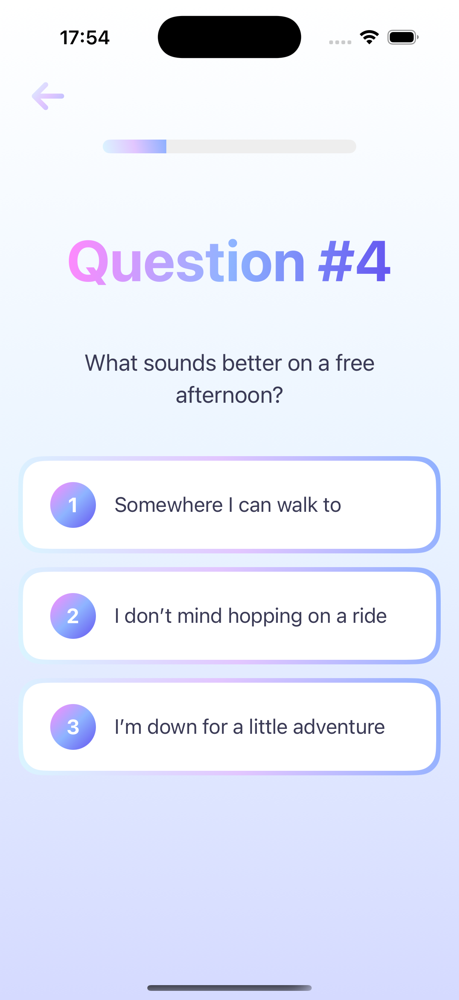
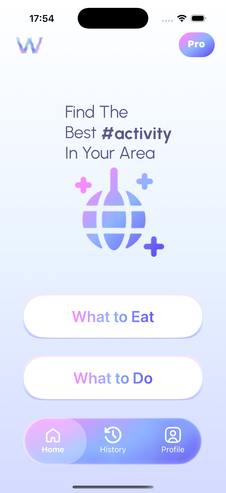
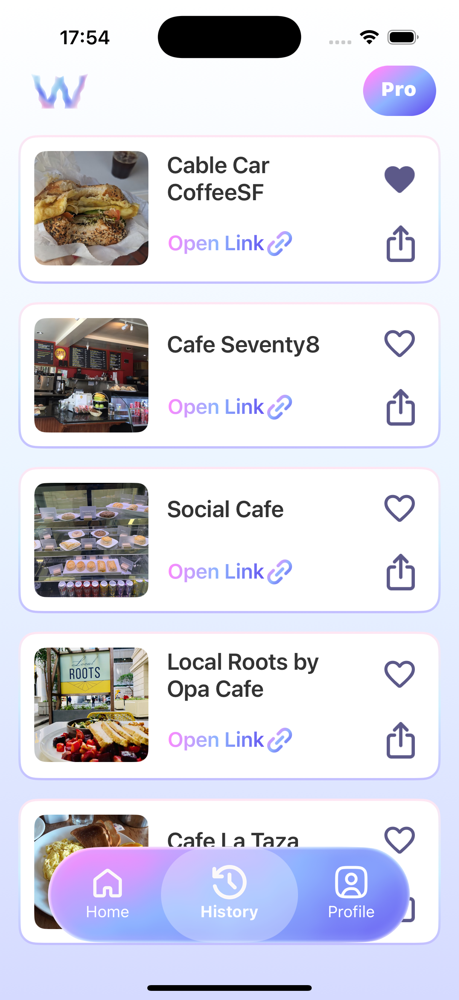
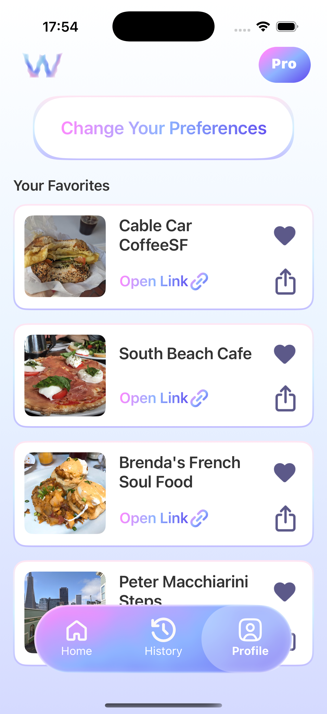
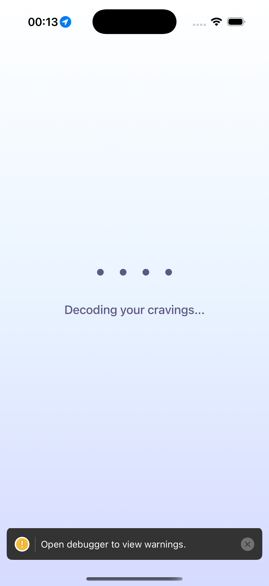
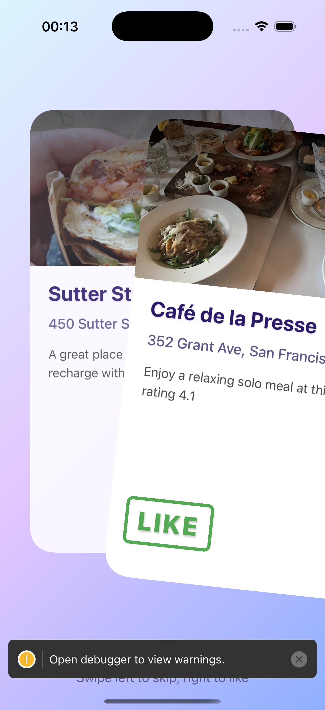
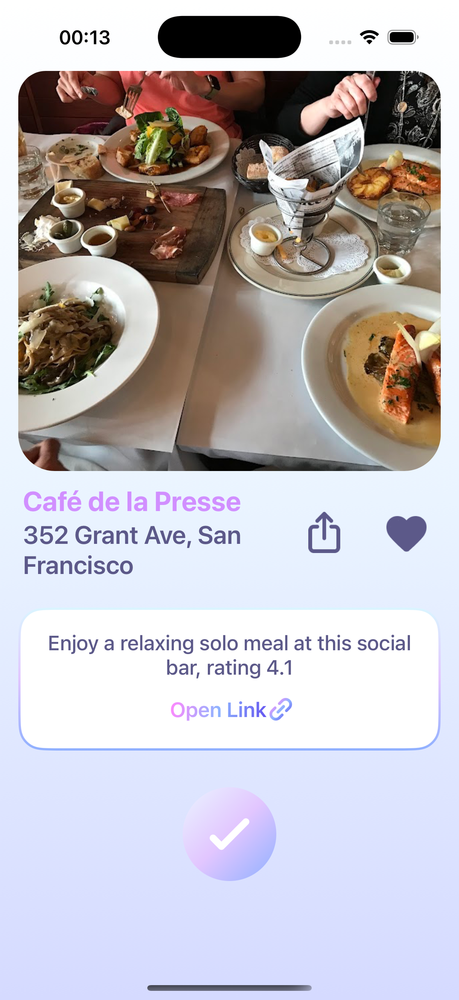

Unity VR Game Engine
This project is a VR game engine made with Unity. It is a block coding game that allows users to create their own games. It provides an easily understandable environment in which users can put assets from its library, manipulate assets' properties and create their own game. They can share and visit other users' games. Or they can share the code to open their game in VR mode.


Whatever - Time Spinner
This is a mobile app in IOS Store made with bare react native. Application uses device id to keep track of users' data. At first start, application asks 16 questions to know the user's personality. Then user can open the app and choose between what to eat or what to eat. Application pulls data from weather, location and ticketmaster api and creates a prompt for ChatGPT API. They get 3 recommendations according to their personality with weather and location. Like dating applications, user can like or dislike the recommendations to match with them.







Whispurr - Dating App
This is an mobile app made with Flutter. Users signup via email, choose their spirit animal and create their profile. Then in discover page they can find other users filtered by preferences. They can WHisper (message) to other users. If they like each other, they can match and start a chat. If they reach to 10 mutual message limit the photos become visible.


One Minute - Daily Task App
This is an mobile app made with Flutter. Users signup via email, setup their profile by answering onboarding questions. Then everyday at a specific time, all users get notification about they get a daily task. Tasks can be completed in around 1 minute. The aim is to make people less stressful and help their phone addiction. They level up and earn badges as they complete the tasks. They can add friends and see each others' profiles.


CBIR for fashion
This project uses huge database of fashion images to create a CBIR (Content Based Image Retrieval) system. It lets user to choose an image (product) and finds similar images from the database. It uses classic methods and CNN model to extract features from images and a KNN model to retrieve similar images. It also uses ML Tuning to find the best hyperparameter for the model. It uses several accuracy metrics to measure the success rate. It uses labels of found images to measure the accuracy. It also labels the chosen image.


Meta Quest Experiment
This master course's term project is a about doing experiments on students on meta quest usage at daily tasks. Several tasks are defined and students are asked to do them with-without meta quest. Data has been analyzed, using more than 20 references the results are presented in a journey article. Article has been sent to a journal.


Gesture Detection
This project is a gesture detection system made with OpenCV and MediaPipe. It lets users to use their hand gestures to control the computer. They can open the gallery, scroll 4 directions, select and click on an image. They can zoom in-out or rotate the images via face camera.


File Management Tools
A comprehensive desktop application for mac and windows that made and put on sale in Grumroad. It provides powerful file management capabilities including batch file renaming, PDF manipulation, and image processing. The app allows users to rename dozens or hundreds of files in seconds with custom base names, preview results before committing, and undo mistakes. For PDFs, users can split or extract specific pages, merge multiple PDFs, delete unwanted pages, and handle password-protected documents. The image processing feature enables quick resizing with custom dimensions, format conversion, and preview functionality. All operations are performed offline, ensuring user privacy and data security.


AI Templates Bundle
A comprehensive digital product bundle featuring six AI-powered productivity tools and templates that made and put on sale in Grumroad. The collection includes a 1-month goal planner for structured achievement, an ultimate email template toolkit with 50+ professional templates, a YouTube video ideas vault for content creators, an AI income guide for passive revenue generation, an AI interview coach with ChatGPT prompts for job seekers, and 50+ AI prompts specifically designed for content creators across multiple platforms. Each product is designed to leverage AI technology to enhance productivity, creativity, and professional development.